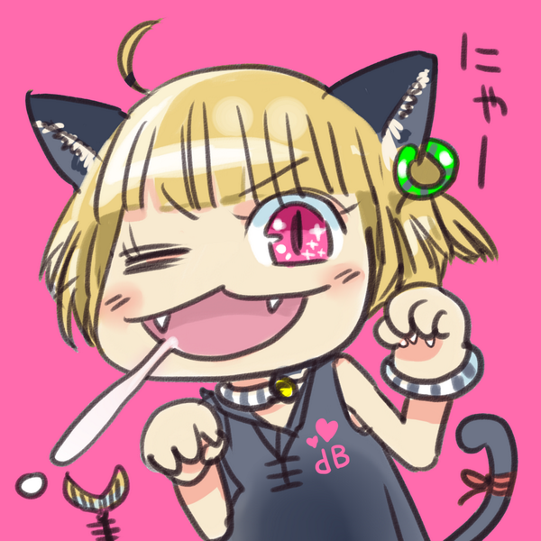

ミライ(mirai-iro)の個人サイトです。
重要なお知らせ (2023/02/21掲載, 2023/03/16更新)
10年来使用していたTwitterアカウント @mirai_iro が、誤判定と考えられる凍結を受けております。
解除の申請を出していますが、現在も凍結されたままの状態です。
ゆえに、連絡などに利用する新しいアカウントを開設しました。 (※異なる目的のアカウントは複数保有できると考えられています)
@mirai_kari_id (このIDは仮のため、後日変更を予定しています)
以前から交流させていただいていた皆様を順次フォローしてまいります。よろしくお願いいたします。
about me
管理しているサイト
SNSアカウント
Twitter @mirai_iro(誤判定と考えられる凍結を受けております)- Twitter @mirai_kari_id (IDは仮であり、後日変更される可能性があります)
- Twitter @imas_DB_p (いわゆる"アイマス垢")
- Instagram @nya_jp
謝辞
アイコン()は青龍彡(@seiryu3)さんに描いていただきました。ありがとうございます。